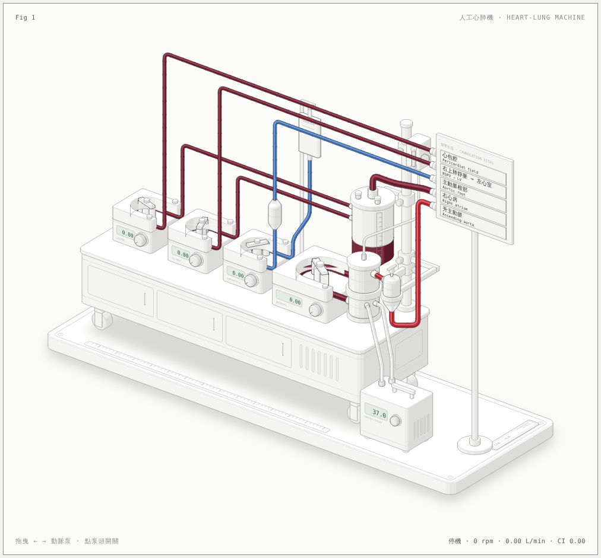
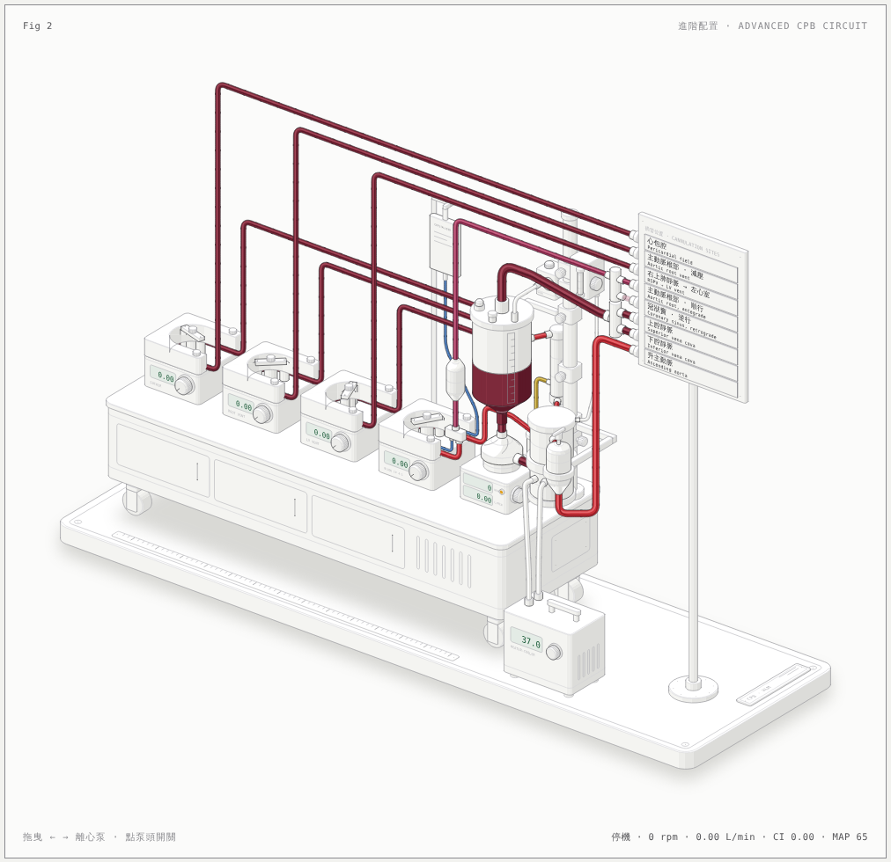

Heart-lung machine · cardiopulmonary bypass
人工心肺機互動圖
兩張可以操作的等角剖析圖，說明體外循環 (cardiopulmonary bypass, CPB) 時每個泵管哪一條路，以及每條管路接在病人身上的位置。圖上不畫心臟，改由右側的插管位置標示板 (cannulation sites) 標出每條管路的去處。每台泵的轉速、流量與儲血槽液面都由同一個模型算出，可以拖曳或用鍵盤操作，也會自動播放導覽。

FIG 1 · 基本配置
四個泵與插管位置
四個滾輪泵 (roller pump) 各管一條路，五個插管位置。
- 動脈泵 (arterial pump) → 升主動脈 (ascending aorta)
- 晶體心麻痺液 (crystalloid cardioplegia) → 主動脈根部 (aortic root)
- 左心減壓 (LV vent)：經右上肺靜脈 (RSPV) 進左心室
- 抽吸泵 (cardiotomy sucker)：心包腔 (pericardial field)
- 靜脈引流：右心房 (right atrium) → 儲血槽，靠重力

FIG 2 · 進階配置
離心泵、4:1 血液心麻痺液與雙腔靜脈插管
成人心臟手術常見的完整配置，八個插管位置。
- 離心動脈泵 (centrifugal pump)：轉速太低時會逆流，示範先夾管
- 4:1 血液心麻痺液 (blood cardioplegia)：順行到主動脈根部，逆行到冠狀竇 (coronary sinus)
- 上下腔靜脈雙插管 (bicaval cannulation) 與 Y 接頭
- 負壓輔助靜脈引流 (vacuum-assisted venous drainage, VAVD)
- 主動脈根部減壓 (aortic root vent) 與血液濃縮器 (hemoconcentrator)
兩種配置的差別
| 項目 | 基本配置（Fig 1） | 進階配置（Fig 2） |
|---|---|---|
| 動脈泵 Arterial pump | 滾輪泵，壓閉式 (occlusive)：流量 = 每轉排出量 × 轉速 | 離心泵，非壓閉式 (non-occlusive)：流量取決於轉速與阻力；低轉速會逆流，需先夾管 |
| 心麻痺液 Cardioplegia | 晶體液 (crystalloid)，順行 (antegrade) 到主動脈根部 | 4:1 血液心麻痺液，同一泵頭的 1/4 吋與 1/8 吋兩條管；順行到主動脈根部，或逆行 (retrograde) 到冠狀竇 |
| 靜脈插管 Venous cannulation | 單支插管到右心房 (two-stage) | 上腔靜脈 (SVC) 與下腔靜脈 (IVC) 各一支，Y 接頭會合 |
| 靜脈引流 Venous drainage | 重力 (gravity drainage) | 重力加負壓輔助 (VAVD)，儲血槽蓋上有正負壓釋放閥 |
| 減壓與抽吸 Vents and suckers | 左心減壓、心包腔抽吸 | 左心減壓、主動脈根部減壓、心包腔抽吸 |
| 其他 Other | — | 血液濃縮器 (hemoconcentrator) 與濾液收集罐 |
| 插管位置 Cannulation sites | 5 個 | 8 個 |
教學用示意圖，不是臨床操作指引。流量、壓力與儲血槽液面都是簡化模型，各數值的來源與假設寫在每張圖下方的說明裡；實際設定依器材與各院體外循環常規。圖以 anatomy 繪圖工具組（MIT 授權）製作，原始碼在 src/。